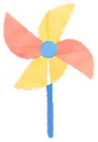

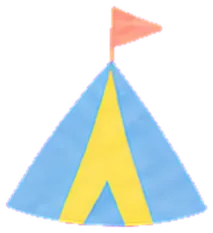
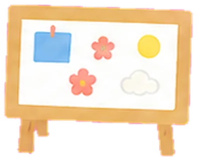
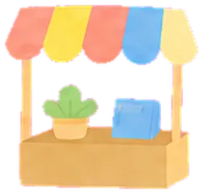
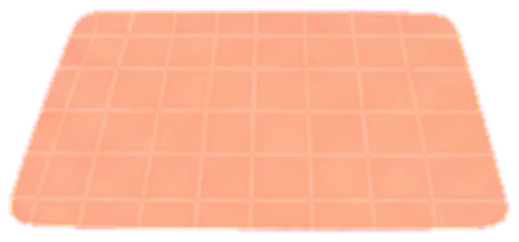


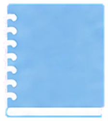
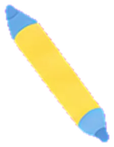
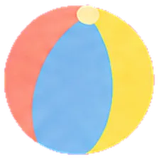
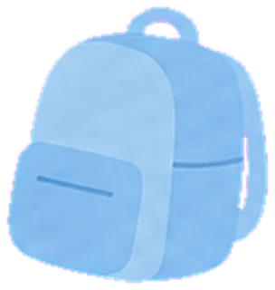


FIND YOUR SCHOOL
あなたに合う学校を、30秒で
モヤン
サニー先生
運営者が
一般社団法人
- 約60分質問もできる
- 無料まだ迷い中でOK
- Zoom自宅から参加
参加した
説明会は、 3人の 少人数でした。 声を 出して 質問できて、 聞きにくい お金の ことにも 答えて もらえました。 説明会の あとの 勧誘は ありませんでした。
PR ・ この
養成講座のキャンペーン・割引
10月16日に
条件をくわしく見る
- 地域連携プラットフォーム
- 18歳以下の
お子さんを 育てている 保護者は、 Amazonギフト券 10,000円分が もらえます。 給付金の 対象外の人(学生・公務員・主婦・個人事業者など)は、 27,000円の 割引も あります。 期限の 記載は ありません。 特典を 組み合わせられるかは、 申し込む 前に 事務局で 確かめてください。 - LEC東京リーガルマインド
- 12月〜3月開講クラスに、
10月31日(土)までに 申し込むと、 受講料が 10,000円割引(330,000円→320,000円)。 申込者全員に、 試験対策Web講座3点セット(参考価格33,000円)も つきます。 こちらは 期限の 記載が ありません。 - 日本マンパワー
- 説明会・
講座体験会に 参加すると、 受講料に 使える 11,000円引きの クーポンが もらえます。 期限の 記載は ありません。 - CMCA
- 10月31日までに
申し込むと、 受講料(352,000円)が 割引に なります。 無料説明会への 参加が 条件です。 公式ページには 「3.3万円」と 「3万円」の 2つの 書き方が あります。 金額は 説明会で 確かめてください。
バナーの
Q&A
申し込む前に、気になること
検索で
-
1
養成講座ってなに？
何時間？ 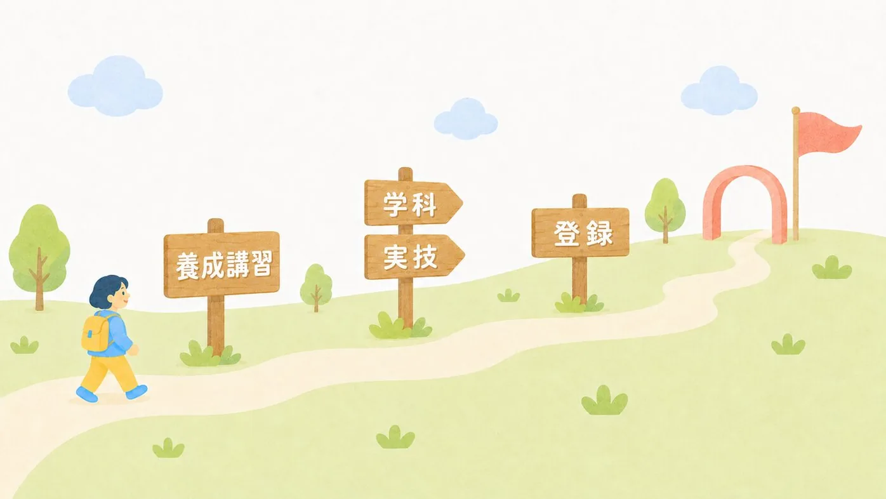
国家試験の
前に 通う、 150時間の 講座です。 期間は
学校に よって、 最短0.5か月から 6か月ほど。 受験する 人の が約9割 ここから 始めます。 出典: 厚生労働省
「第31回試験結果の 概要」 -
2
-
3
-
4
合格率は？
学科54.8%・
実技61.7%です。 2026年7月の
第32回の 結果です。 どちらも、 半分以上が 受かって います。出典: キャリアコンサルティング協議会・
日本キャリア開発協会の 公表値 -
5
このサイトから
申し込むと、 損しない？ 損は
しません。 このサイトの
ボタンは、 各校の 公式ページを 開くだけです。 通っても、 受講料が 上がることは ありません。 紹介料は、 学校が 払う しくみです。 割引が
もらえるかは、 学校ごとの 条件で 決まります。 「説明会に 出た人だけ」の 割引も あるので、 申し込む 前に、 上の キャンペーン欄で 条件を 確かめてください。
LEARN ON A PICNIC
ピクニックしながら学ぶ
勉強中・
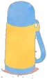
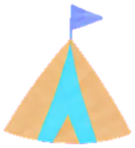
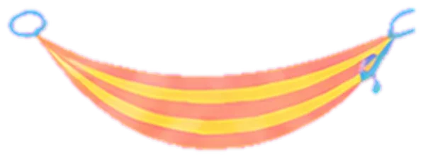
キャリア図書館
ピクニック広場
試験対策テント
キャリア相談テント
キャリコンNOW掲示板
キャリアマルシェ
ひと🌳 疲れた
PROFILE